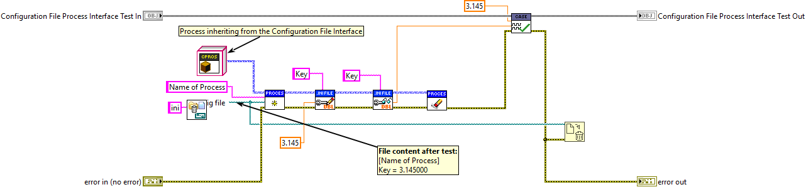
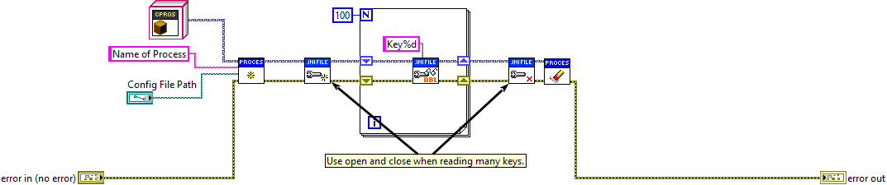

Configuration Management
Configuration management is needed in most software systems, and test systems are no exception, quite the contrary. Parameters that should be editable after the system has been built and deployed are best kept outside the source code. Because configuration management is so central to test systems, the Triarc Framework provides a framework for it.
Configurations can be stored in any format. A common choice is human readable text files.
LabVIEW comes with built in functions for key-value pairs in Windows style .ini files.
Other common choices are the Windows registry or a database.
Triarc Configuration Interface
The Configuration interface defines abstract methods for reading and writing configuration data.
An implementation can use any storage technology.
This is useful, for example, for an in-memory implementation used in tests, or for an object that carries configuration data.
Triarc Configuration File Interface
A common way to store configurations is in human readable text files. This works well in many cases, and text files are easy to manage and version control.
The Configuration File interface implements the Configuration interface with an ini file.
To make a class configurable, let it implement Configuration File. The class must inherit from Base, which holds the file path and the file reference.
The API is shown in the test case below, where configurations are written to a text file.

| VI | Description |
|---|---|
Read Boolean.vi, Read Double.vi, Read I32.vi, Read U32.vi, Read String.vi, Read Path.vi |
Read the value of a key. If the key is missing, the default value is written to the file and returned. |
Read Comma Separated String.vi |
Reads a string and splits it at commas into an array of trimmed strings. |
Write Boolean.vi, Write Double.vi, Write I32.vi, Write U32.vi, Write String.vi, Write Path.vi |
Write the value of a key. |
Get All Keys.vi |
Returns the names of all keys in the section of the object. |
Open Config.vi, Close Config.vi |
Open and close the file around many reads. Optional. |
The keys are read from and written to the section of the object.
For a process, the section is named after its qualified name, for example [Main::Motion::Source].
For a Base object that is not a process, the section is named after its name.
The Configuration File
The configuration file path is an optional input of Init.vi.
If no path is given, a default path is used. Read Config File Path.vi returns the path in use.
In the development environment on Windows, the default is Config\Config.ini in the application directory, which is the folder of the LabVIEW project.
In a built Windows application, the default is under the local application data folder of the user, in a folder named after the company and product of the executable.
On NI Linux Real-Time, the default is /home/lvuser/natinst/bin/config/config.ini.
If the file does not exist, it is created, together with the folders containing it.
Reading the Configuration of a Process
Override the protected Read Configuration.vi of the process to read its configuration.
The framework calls it in the process loop when the process handles the Init message, the first message handled when it starts.
Store the values directly in the class data: Read Configuration.vi runs in the process loop, where the class data may be accessed.
An Application can also create and add its processes in Read Configuration.vi, for example reading the names of the processes to create from a key in its own section.
Thread Safety
The Configuration File API is designed to be thread safe and optimized for reading. Many processes can read from and write to the same configuration file without race conditions. This is done by allowing only one process at a time to write to the configuration file.
If many keys are read in sequence, use Open Config.vi and Close Config.vi, as shown below.
This avoids the overhead of opening and closing the file for each read.
Without Open Config.vi, each read opens and closes the file itself.

Practices and Antipatterns
There are a few pitfalls to be aware of when working with configurations, and they are often overlooked. This section assumes that configurations are stored in a file, but the same applies to any storage technology.
Configuration Data is Global
As configurations are stored in one or more text files, any part of the application that can find and parse the file can access the configuration information. This means there is an inherent risk of race conditions, and care should be taken whenever a configuration is updated.
In TF, the configuration functions make sure that each process can only access its own section of the configuration file.
This reduces the risk of race conditions.
Race Conditions
If a file is opened for writing in several places at the same time, race conditions can occur.
The process that closes the file last overwrites the changes that others made since it opened the file.
TF prevents this with synchronization that allows only a single process at a time to open the file for writing.
Default Values
If a key is not found, the native LabVIEW configuration file functions return a default value set by the developer. If a key is, for example, misspelled in the file, the user of the system gets no feedback on what the system expects, which can cause a lot of pain.
To mitigate this, TF writes the default value to the configuration file when a key is not found.
Missing keys are thereby added to the file, and if the whole file is missing, a file with the default configuration is created.
A key that is missing from a configuration file is therefore not an error. Make sure the default value wired to each read is sensible: an unwired default is the default of the data type, for example 0 or an empty string.
Lack of Structure
With the native LabVIEW configuration file functions, the developer is responsible for using reasonable sections when saving configuration data. This often leads to a structure that degrades over time as more fields are added.
TF enforces a structure on the configuration file, because each process has its own section.
If, for example, two instances of a process control two hardware devices, each instance has its own section named after the process.
The two devices can then be configured independently, and the only thing the developer needs to do is give the processes unique names.